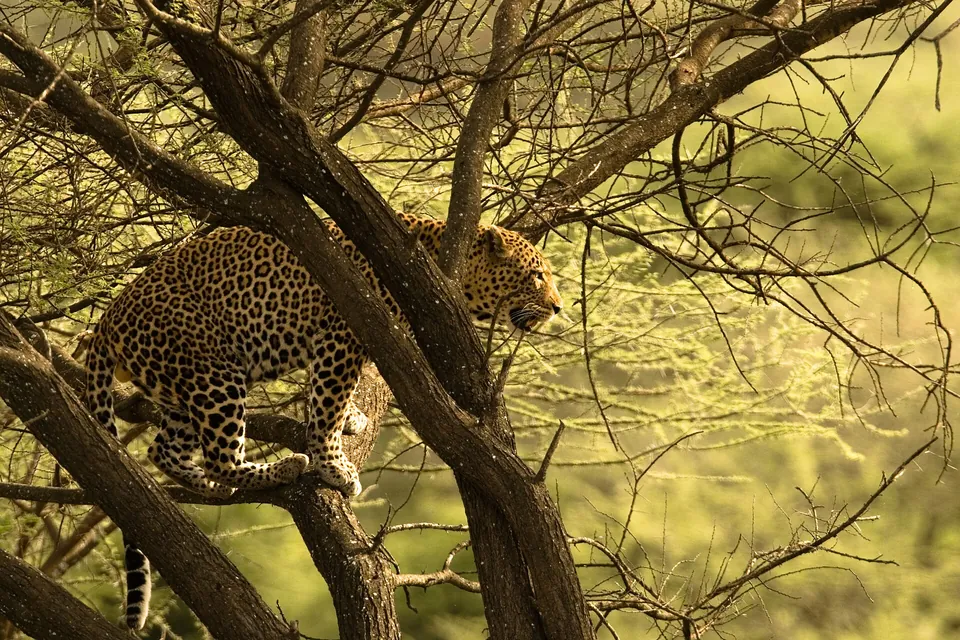

Home › Species › Leopard facts
Leopard facts: range, rosettes, hunting and black panthers
The leopard (Panthera pardus) is the most widespread and adaptable big cat, found across much of sub-Saharan Africa and parts of Asia from the Middle East to the Russian Far East. It is a solitary stalker that often hauls kills into trees, and a melanistic (black) leopard is what many people call a black panther. The leopard is listed as Vulnerable on the IUCN Red List.

Jump to: Quick facts | Appearance | Black panthers | Hunting | Range | Status
Quick facts
| Scientific name | Panthera pardus |
|---|---|
| Weight | 17 to 90 kg |
| Head and body length | 91 to 191 cm, plus a 51 to 101 cm tail |
| Lifespan | About 13 to 21 years |
| Litter size | 1 to 4 cubs, after a gestation of 90 to 105 days |
| Range | Sub-Saharan Africa and scattered parts of Asia |
| IUCN Red List | Vulnerable |
Size and lifespan ranges are those listed by the IUCN SSC Cat Specialist Group and cover both sexes and all populations.
How do you recognise a leopard?
Leopards have a pale yellow to golden coat covered in rosettes: rings or broken circles of dark spots. Unlike a jaguar's rosettes, a leopard's usually have no spot in the middle. Leopards are also lighter and longer bodied than jaguars, and they are bigger and stockier than cheetahs, which have solid round spots. Size and colour vary a lot across the leopard's huge range. Our leopard vs jaguar vs cheetah guide shows how to tell them apart.
What is a black panther?
"Black panther" is not a species. It is a common name for a leopard or jaguar with melanism, a genetic variation that produces very dark fur. Look closely in good light and the rosettes are still visible. In Asia and Africa a black panther is a leopard; in the Americas it is a jaguar.
How do leopards hunt?
Leopards stalk to very close range, then attack with a short burst of speed and a powerful swipe of the front paw. They eat an exceptionally wide range of prey, from rock hyraxes of about 4 kg up to eland, and in some areas domestic animals. Leopards are famous for carrying kills up into trees, which keeps the meat away from lions and hyenas.
In savannas and woodlands leopards are mainly active between sunset and sunrise, but studies in undisturbed rainforest in Gabon found them largely active by day. Adults are solitary; in African protected areas male home ranges are roughly 30 to 78 km² and female ranges 15 to 38 km², but ranges in the Kalahari have exceeded 2,000 km².
Where do leopards live?
The leopard has the largest range of any big cat. It occurs across most of sub-Saharan Africa and, in fragmented pockets, in the Arabian Peninsula, Turkey, southwest Asia and the Caucasus, the Himalayas, South Asia, Indochina, Peninsular Malaysia, Java, China and the Russian Far East. It lives in rainforest, savanna, mountains and semi desert, and has been recorded up to 5,200 m in the Himalayas. Given cover and prey, and freedom from persecution, leopards can persist surprisingly close to people.
Why is the leopard Vulnerable?
Despite their adaptability, leopards have vanished from large parts of their historic range. The IUCN Cat Specialist Group recorded an 11 percent reduction in leopard range between 2016 and 2023. In Southeast Asia leopards are gone or functionally gone from most of their range, surviving mainly in Thailand, Myanmar, Malaysia and Java, and populations in North Africa and Arabia are tiny or lost. The Amur leopard survives as a single population in the Russian Far East and neighbouring northeast China after intensive conservation work.
Threats include habitat loss, prey depletion, retaliatory killing over livestock, illegal trade in skins and parts, and poorly managed trophy hunting. Several leopard subspecies are assessed separately and some, such as the Indochinese leopard, are Critically Endangered.
Frequently asked questions
Is a black panther a separate species?
No. A black panther is a leopard or jaguar with melanism, a genetic variation causing dark fur. The rosettes are still faintly visible.
Why do leopards drag prey into trees?
Hoisting a kill into a tree keeps it away from lions, hyenas and other competitors so the leopard can feed over several days.
Where do leopards live?
Leopards live across most of sub-Saharan Africa and in scattered parts of Asia, from the Middle East and Caucasus to India, Southeast Asia, China and the Russian Far East.
Cite this page
APA: BigCatWise. (2026, October 8). Leopard facts. Joshua Israel Ventures LLC. https://bigcatwise.com/leopard.html
MLA: "Leopard facts." BigCatWise, Joshua Israel Ventures LLC, 8 Oct. 2026, bigcatwise.com/leopard.html.
Chicago: BigCatWise. "Leopard facts." Joshua Israel Ventures LLC. Last modified October 8, 2026. https://bigcatwise.com/leopard.html.
Please check the date you accessed the page and adjust to your teacher's or journal's style guide.
Sources
- IUCN SSC Cat Specialist Group: Leopard
- San Diego Zoo Wildlife Alliance: Leopard
- Panthera: Leopard
- WWF: Amur leopard
- IUCN Red List of Threatened Species
Figures are rounded summaries of the sources above. Wild populations are hard to count, so estimates change as new surveys are published.